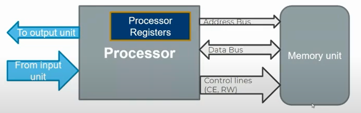
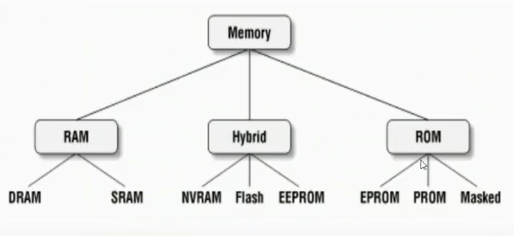

Memory and Memory Types
what is the usage of the memory in hardware architectures?
- the code instructions need a storage in the hardware to be able to fetch each instruction and execute, we store the code in FLASH Memory (aka ROM).
- instructions execution needs temporary storage to put variables here and there to be able to execute a complete code sequence, we use RAM for this, it is able to store temporary data that can be replaced by any value.
how the CPU controls the RAM/ROM and IO or peripherals in general?
- CPU deals with Memory, and all of these have controllable registers that is mapped to certain addresses in the RAM, so processor can deal with them using the RAM interfacing with it becuase the user can W/R this type of registers, it's called User-visible-registers
- there's some registers does not have any mapped addresses in the RAM so it cannot be controlled using RAM interface with CPU, usually these registers are reserved for controlling the operation of the processor, OS program access and privileged access only, but there're assembly instructions user can use to deal with em' directly. these registers are called Control and status registers
how does the cpu inteface the Memory?

- read/write data using data Bus
- select the address using address Bus
- select the operation (R/W/enable/disable) from Control lines
note: Memory is always byte addressable, so each byte have an address no other byte have
for example if I type int x = 0; this will be stored in the RAM with 4 addresses, bacause each byte of the int datatype (i.e. 4 bytes) have differest address. of course sequential addresses
Address bus width defines the Number of bytes or soCalled locations the CPU can access. if cpu have 2 bits address bus, then the addresses it can access is 0b00,0b01,0b10 and 0b11, which is 2 power n where n is the address bus width.
ARM Cortex-M4 Processor have 32 bits Address bus, that means that it can access 2 power 32 location which is 4,294,967,296 locations. of course STM32 Memories doesn't have all these locations, this number only defines the capability of the Memories the ARM cortex-M4 processors can afford. you can use this processor then to deal with any memory that does have number of locations no bigger than 4,294,967,296.
we have referred to location as byte so far, but you need to know that this is not always true, there'some memories have the location equals 16 bits or more, but the absolute thing is that it still byte addressable, means that each byte have a unique address and each location contain number of bytes with number of addresses, and the processor access each location at once to increase performance of reading and writing to the Memory
different types of memories

ROM memory is Non volatile, that means that it conserve the data stores in it even when the power is off.
Hybrid memory is Non volatile and writable for Multiple times
RAM is a volatile Memory for temporal data storage, Faster in Reading Memory locations More than ROM and Hybrid Memories
| type | discription |
|---|---|
| Masked ROM | have a specific hardware design (unchangable) circuit so the user cannot write any code other than the existing one |
| PROM | have a modifiable hardware desgin (unchangable)circuit it's considered One time Programmable Memory (OTP ROM) as it's delivered to the user fully erased and the user can modify the circuit design using circuit fuses (e.g. zener diodes) Only Once |
| EPROM | erasable One time programmable ROM Memory cells based on Floating gate transistors, A bit's 0 or 1 state depends upon whether or not the floating gate is charged or uncharged. When electrons are present on the floating gate, current can't flow through the transistor and the bit state is 0, This is the normal state for a floating gate transistor, when a bit is programmed. When electrons are removed from the floating gate, current is allowed to flow and the bit state is 1. usually it's erasable by UltraViolet |
| EEPROM | same structure as EPROM but erasable by Electricity (high Voltage) and can be programmed Multiple times usually used in runTime when we need to save non-volatile data |
| FLASH EEPROM | same as EEPROM but it's Block (number of locations) accessable and erasable Typically Faster than EEPROM for large data storage like Code binaries. not preferred to use in runtime |
| NVRAM | it's the same as RAM volatile circuits but with transient power supply that remains one when the main power is off to prevent erasing of the Memory values. |
| DRAM | volatile memory based on capacitors, chardged state means bit state 1, uncharged state means bit state 0. usually used when we care about storage capacity not access performance, used in external Memory |
| SRAM | based on transistors, have automatic refreshing circuit usually used when we care of access performance over than storage capacity, used in registers, RAM, cache and IO |
| comparison | SRAM | DRAM |
|---|---|---|
| based on | 6 transistors @ the cell circuit | one capacitor @ the cell circuit |
| access time | lower | higher |
| cost | higher | lower |
| size | lower | higher |
| power consumption | lower(automatic refreshing circuit) | Much higher (refreshing circuits) |